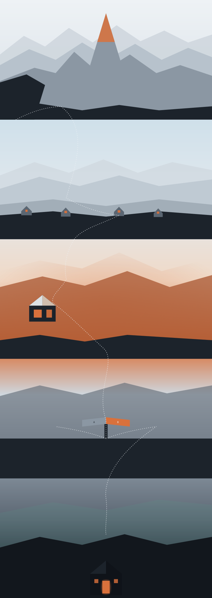

Disponible para nuevos negocios
Todo negocio merece
un hogar digital.
Diseño y desarrollo sitios a medida — no una plantilla con tu logo pegado encima. Un solo interlocutor, de punta a punta.
Trabajos
Negocios que ya
tienen su lugar.
Cada uno con su propia identidad — pensado desde cero para representar lo que ya construyeron, no para parecerse al del vecino.
Directo: hablás conmigo, no con un equipo de ventas.
Quién está del otro lado
Construyo cada sitio
como si fuera el mío.
Soy Franco, y Tierra es mi estudio — trabajo solo, basado en Dinamarca. Me dedico a que pequeños negocios tengan, por fin, una identidad propia en internet.
Sin intermediarios ni procesos de agencia: cada decisión, chica o grande, la tomamos entre los dos.
Cómo trabajamos
Plan A
700 kr. / mes
Yo mantengo el sitio, vos solo lo usás. Sin ataduras técnicas.
Control total
Plan B
20.000 kr. pago único
El sitio queda enteramente tuyo, sin mensualidad.
Contacto
Démosle a tu negocio
su lugar propio.
Contame de qué se trata y qué te gustaría lograr. Sin compromiso — solo para ver si encajamos.
Escribime